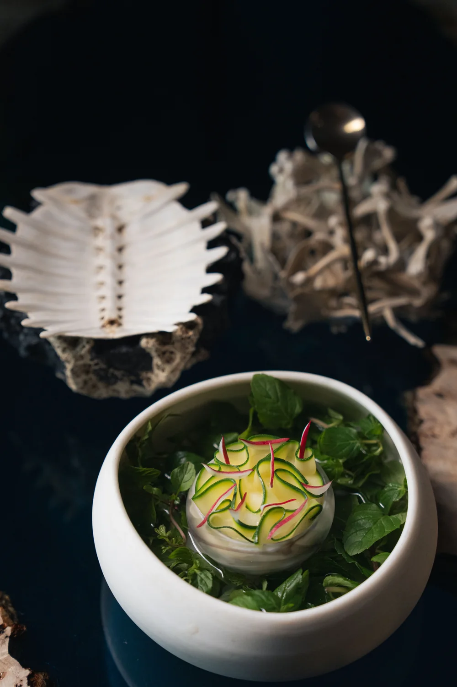

この後ご予定がある夜に
ショートコース
全5章・テーブル席・1〜8名
「この後に予定がある」「お酒を中心に楽しみたい」という声にお応えしたコースです。
14,800税込
空席を見る

Concept
メニューに
時空の
Cenote
銀座に
青い
大地は、
1皿目は38億年前の海。
水面＝現在旅の最後は、
1皿目、38億年前
最初の
5皿目、2億年前
恐竜の
7皿目、500年前
500年前、
ETHICAコレクションより
Innovative Plates





ETHICAの
単に
そのために

Executive Chef
イノベーティブ、
MASAO ANDRÉS MATSUNAE GUZMÁN
Culinary Philosophy

ETHICAが
チュイルや
一般的な
野菜などの
すべての
The Cave


岩壁に
Courses
迷われたら、
この後ご予定がある夜に
全5章・テーブル席・1〜8名
「この後に予定がある」「お酒を中心に楽しみたい」という声にお応えしたコースです。
14,800税込
空席を見るはじめての方に
全8章・テーブル席・1〜8名
地球46億年の
19,800税込
この旅の空席を見る
誕生日・記念日に・2名〜
全9章・テーブル席・2名〜・メッセージプレート付き
グランド・コレクションの
46億年の
25,200税込
記念日コースの空席を見る
デート・記念日に・1〜2名
全9章・キッチンの
キッチンの
グランド・コレクションをもとに、より希少な部位やその日限りの食材を織り交ぜます。
27,800税込
カウンターの空席を見る
会食・接待に・2〜4名
全9章・キッチンの
キッチンの
市場にめったに出回らない食材や、熟成させた逸品で描く全9章。
29,800税込
個室の空席を見るベジタリアンの方に・1〜8名
全8章・テーブル席・1〜8名
ETHICA の
19,800税込
空席を見る特別な夜に
全9章・テーブル席・1〜8名
コレクションの
少し
24,800税込
空席を見る料金は
※
Q&A
ETHICA の
ショートコース
手描きの
キッチンの
料理に
アレルギーは、
はい。
スマートカジュアルで
クレジットカード
空席が
20名様までの
Access
ミシュランガイド東京 3年連続掲載
この